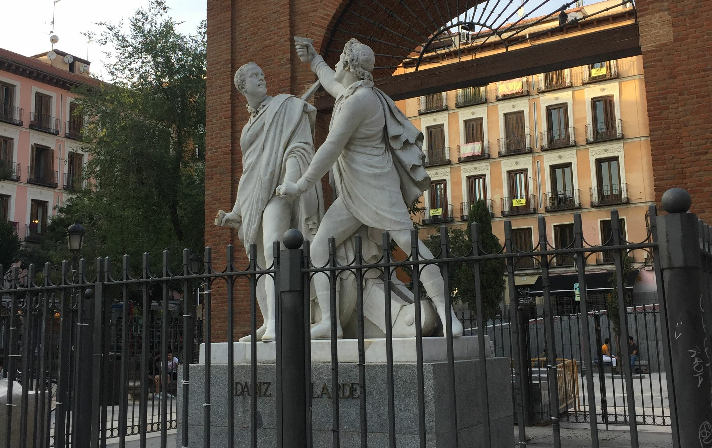

When asked what my favorite thing about studying abroad in Madrid, Spain was, I think back to our many walking tours across the city as a part of the program the school did to incentivize us to explore. One of my favorite things about exploring Madrid and other parts of Spain was my ability to walk through history. Walking through the Plaza del Dos de Mayo made me realize history was no longer just something I read about in textbooks or lectured on in class; it was something I was observing for myself. Plaza del Dos de Mayo marked the commencement of the Spanish War of Independence. In my Understanding 20th Century Spain class, we talked about the beginning of the war and where it happened. Therefore, I could make connections between what I was learning and the places I was going, which was amazing.
Through walking tours, I could explore various barrios--the Spanish word for neighborhoods--of Madrid that I may not have thought to look at myself. My favorite thing about these walking tours is that I not only get to see the many elements of that barrio, but I also learn the historical context behind it. My first walking tour of Malasaña gave me an insight into this rebellious neighborhood. Following the end of Francisco Franco’s regime--authoritarian military dictator of Spain--the neighborhood partook in drugs, sex, and other behavior that was previously discouraged.
I had the opportunity of traveling to different countries while abroad, such as Italy and France. However, when I think about one of my favorite trips, I think of our trip to Granada, Spain. My roommate, Camila, and our friends, Sasha and Jasmin, and I went to Granada for a weekend, where we were able to see marvelous sights. We were able to visit multiple viewpoints, all with stunning views, the Royal Chapel of Granada and the Gypsy Quarter of Sacramonte or "Sacred Mount" in English. Granada is located in the autonomous community of Andalusia, Spain. It is the birthplace of tapas, which we would indulge in a lot of in Spain. Tapas are snacks traditionally given with drinks, and they range from anything patatas bravas to calamari. While we couldn't go to the Alhambra since tickets sell out fast, we went to a viewpoint pictured above. It gave a beautiful panorama of it. The Alhambra is a palace built in the 1200s and 1300s for the Nasrids, an Arab dynasty. It was the last Muslim dynasty in the Iberian Peninsula, and their rule was the last centuries of Muslim control in Andalusia. However, the Catholic Monarchs, Isabella I and Ferdinand II conquered it after the “Reconquista” or reconquest. At that point, it became the royal court of the Catholic Monarchs. It is interesting to reflect on now because the Muslim and Catholic influences on Spain are evident throughout the country, especially through its architecture. I remember learning about the Reconquista in my Understanding 20th Century Spain class, and to be able to look out into the distance and see it, was enchanting.

Pictured above is an image of the Royal Chapel of Granada. It is the resting place of Queen Isabella I of Castille and King Ferdinand II of Aragon. In Granada, history came full circle. It was where their story had begun in the Alhambra through their conquest of Granada. However, it was also where it ended in their place of burial. The Royal Chapel was beautiful, and I could walk around and see several paintings, books and tapestries, and fabrics they had left behind. I wanted to go to the Royal Chapel because of its historical significance, having learned about it in class. Camila and I were able to go down to their final resting places and see their graves. It was amazing to be able to see what I had been learning about, especially given the monarchy's influence on Spain, which is still prevalent present day.